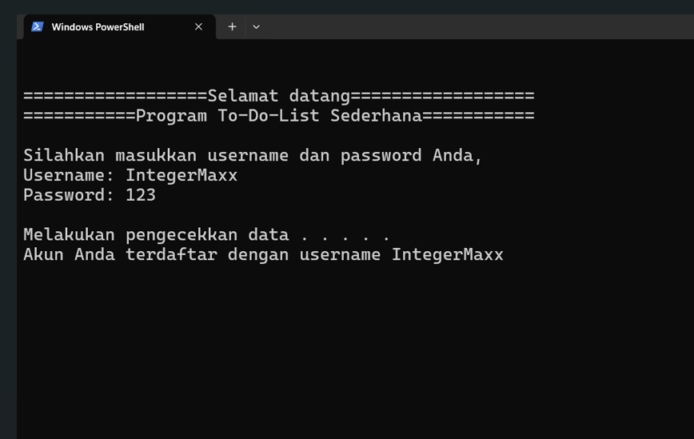

Overview
Mempelajari bahasa pemrograman membutuhkan kegigihan, konsistensi, dan disiplin karena setiap bahasa memiliki tingkat abstraksi yang berbeda, baik bahasa dinamis yang fleksibel seperti Python dan JavaScript maupun bahasa statis yang lebih tangguh seperti Java, yang saya pilih sebagai bahasa pertama dengan keyakinan bahwa penguasaan bahasa statis akan memudahkan mempelajari bahasa lain; Java saya pelajari sejak 21 Agustus 2023 hingga 25 September 2025 selama kurang lebih dua tahun mencakup konsep dasar dan Object Oriented Programming, meskipun prosesnya kerap terhambat oleh kesulitan fokus di tengah aktivitas sehari-hari, sebagaimana disadari pula oleh Cal Newport dalam Deep Work tentang pentingnya konsentrasi tinggi, yang dalam keterbatasan saya terapkan dengan mengatur waktu dan lingkungan belajar, hingga akhirnya menghasilkan sebuah program sederhana yang berangkat dari tiga permasalahan utama, yaitu kebingungan awal mahasiswa memahami bagaimana data disimpan secara permanen melalui SQL dan DBMS, kebutuhan menerapkan konsep Java ke dalam proyek nyata, serta permasalahan personal dalam mencatat dan melacak daftar tugas yang boros dan tidak terstruktur; untuk itu dibuatlah aplikasi Daftar Tugas berbasis Command Line Interface (CLI) menggunakan Java dengan penyimpanan file teks (.txt) tanpa database yang memberikan gambaran proses login, CRUD data, dan history, dengan manfaat bagi mahasiswa dan dosen sebagai media pembelajaran alur kerja program tanpa GUI, serta bagi saya sendiri sebagai sarana melatih kemampuan pemrograman, problem solving, dan abstraksi sekaligus portofolio, di mana aplikasi ini telah berhasil menerapkan konsep dasar dan sebagian OOP Java namun masih memiliki keterbatasan seperti keamanan password dan data yang lemah, belum adanya validasi, laporan progres, pengurutan data, peringatan waktu, serta dukungan operasi massal.
Utility
Acer Aspire 5, Windows 11, mouse, Internet, Maven 3.9.6, JDK 22, chatGPT, Programming Thinking, Design Thinking, VsCode, Library lainnya yang terlibat
Source Code
https://github.com/IntegerMaxx/java-maven-simple-todolist.git